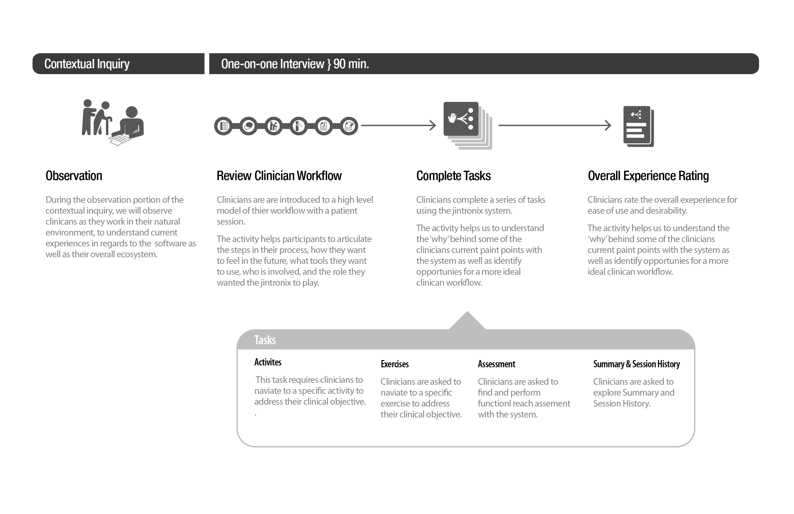

01
A research methodology built for a clinical setting, not a usability lab.
Standard usability testing did not fit. Patients were medically fragile and therapists were mid-session. We used contextual inquiry across three care settings, intercept interviews around shift transitions, and remote session-log analysis to find patterns across hundreds of real patient sessions.

02
Jintronix wireframes and prototype iterations
Early session flow wireframes. We tested timing, audio cues, and scoring as separate ideas before sending any of it into development.

03
A four-step prescription flow built around what therapists already knew: their patient, not the game library.
The original interface required therapists to know Jintronix game names before they could prescribe anything. The redesign replaced that with a guided workflow. Choose position, choose supervision level, choose a clinical objective, then pick from a filtered activity set. Therapists who had never used Jintronix before could build a complete prescription in under a minute.
Before

After